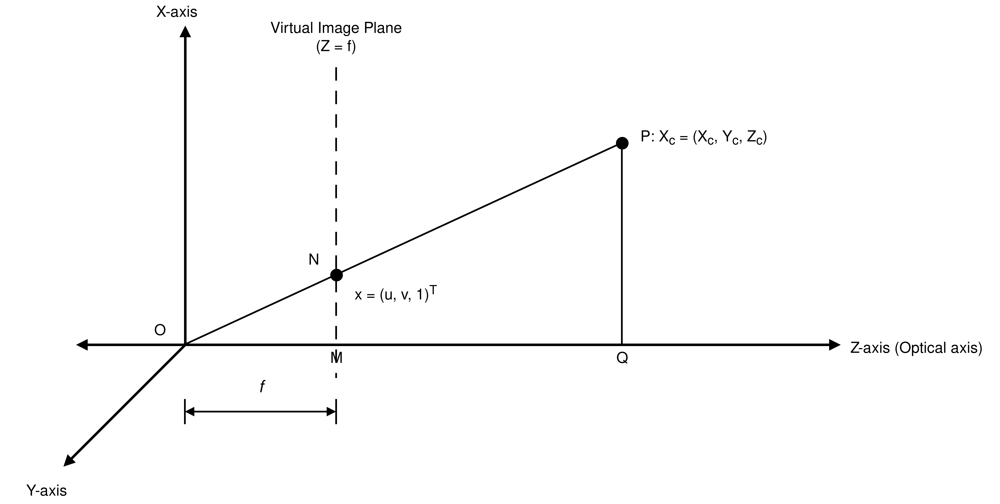

Contents
1 Introduction
Imagine a person with only one eye, the world would look as flat to them as it does to an ant. Having two separated eyes lets us perceive the depth of a 3D world. Epipolar geometry models intrinsic geometry of this stereoscopic setup, two cameras see the same point from slightly different angles, and that difference of angle is what encodes depth.
I utilized this concept in a project combining SLAM and NeRF (code here), where I extracted frames from video, detected features with FAST, matched them with BRIEF, and used epipolar geometry to recover the relative pose between camera frames.
2 Notation
Bold letters denote vectors, upright letters denote matrices, and lowercase italic letters
denote scalars. Subscripts l and r denotes the left and
right camera respectively.
| Symbol | Type | Meaning |
|---|---|---|
| \(u, v\) | scalar | pixel coordinates |
| \(f_x, f_y\) | scalar | focal lengths, in pixels |
| \(c_x, c_y\) | scalar | principal-point coordinates |
| \(s\) | scalar | skew coefficient |
| \(\lambda\) | scalar | projective (homogeneous) scale factor |
| \(Z_c, Z_l, Z_r\) | scalar | depth of a point along a camera's optical axis |
| \(u_i, v_i, u_i', v_i'\) | scalar | pixel coordinates of the \(i\)-th point correspondence |
| \(\sigma, \sigma_1, \sigma_2, \sigma_3\) | scalar | singular values |
| Symbol | Type | Meaning |
|---|---|---|
| \(\mathbf{X}_w\) | \(4\times1\) | world coordinates of a 3D point |
| \(\mathbf{X}_c\) | \(3\times1\) | a 3D point expressed in a generic camera's frame |
| \(\mathbf{X}_l, \mathbf{X}_r\) | \(3\times1\) | the same scene point \(P\) expressed in the left / right camera frame |
| \(\mathbf{t}\) | \(3\times1\) | translation between camera frames; also the baseline vector \(\overrightarrow{O_lO_r}\) |
| \(\mathbf{n}\) | \(3\times1\) | normal to the epipolar plane |
| \(\mathbf{u}_3\) | \(3\times1\) | third column of \(\mathrm{U}_E\) |
| Symbol | Type | Meaning |
|---|---|---|
| \(\mathbf{x} = (u,v,1)^\top\) | vector | homogeneous pixel coordinate |
| \(\mathbf{x}_l, \mathbf{x}_r\) | vector | homogeneous pixel coordinates in the left / right image |
| \(\hat{\mathbf{x}} = \mathrm{K}^{-1}\mathbf{x}\) | vector | normalized image coordinate, i.e. ray direction |
| \(\mathbf{x}_{l,i}, \mathbf{x}_{r,i}\) | vector | the \(i\)-th correspondence pair |
| \(\mathbf{l}_l, \mathbf{l}_r\) | vector | homogeneous line coefficients of an epipolar line |
| \(\mathbf{e}_l, \mathbf{e}_r\) | vector | epipoles |
| \(\mathbf{f}\) | \(9\times1\) | vectorized entries of \(\mathrm{F}\), \(\mathbf{f} = (F_{11},\dots,F_{33})^\top\) |
| Symbol | Type | Meaning |
|---|---|---|
| \(\mathrm{K}, \mathrm{K}_l, \mathrm{K}_r\) | \(3\times3\) | intrinsic matrices |
| \(\mathrm{R}\) | \(3\times3\), \(\in SO(3)\) | rotation matrix |
| \([\mathbf{t}]_\times\) | \(3\times3\), skew-symmetric | cross-product matrix of \(\mathbf{t}\) |
| \(\mathrm{E}\) | \(3\times3\), rank 2 | essential matrix, \(\mathrm{E} = [\mathbf{t}]_\times \mathrm{R}\) |
| \(\mathrm{F}\) | \(3\times3\), rank 2 | fundamental matrix |
| \(\mathrm{A}\) | \(N\times9\) | eight-point design matrix |
| \(\mathrm{U}_A, \Sigma_A, \mathrm{V}_A\) | matrices | SVD factors of \(\mathrm{A}\) |
| \(\tilde{\mathrm{F}}\) | \(3\times3\) | least-squares estimate of \(\mathrm{F}\) before the rank-2 projection |
| \(\mathrm{U}_F, \Sigma_F, \mathrm{V}_F\) | matrices | SVD factors of \(\tilde{\mathrm{F}}\) |
| \(\Sigma_F^{(2)}\) | \(3\times3\), diagonal | \(\Sigma_F\) with its smallest singular value zeroed |
| \(\mathrm{U}_E, \Sigma_E, \mathrm{V}_E\) | matrices | SVD factors of \(\mathrm{E}\) |
| \(\mathrm{W}\) | \(3\times3\), fixed | helper matrix used to extract \(\mathrm{R}\) from the SVD of \(\mathrm{E}\) |
| Symbol | Type | Meaning |
|---|---|---|
| \(O_l, O_r\) | point in space | optical centers of the left / right camera |
| \(P\) | point in space | the observed 3D scene point |
Before deriving the epipolar constraint, let's review the pinhole camera model, which relates 3D points to image pixels.
3 The Pinhole Camera Model
A pinhole camera model maps a 3D point in the world to a 2D point in the image plane. In homogeneous coordinates this projection is linear:
where \(\mathbf{x}\) is the homogeneous pixel coordinate, \(\mathbf{X}_w\) the homogeneous world coordinate of the 3D point, and \(\lambda\) a nonzero scale factor, equal to the depth of the point along the camera's optical axis.
Intrinsic matrix
\(\mathrm{K}\) encodes the internal, camera-specific parameters:
where \(f_x, f_y\) are the focal lengths in pixels along the image \(x\)- and \(y\)-axes, \(c_x, c_y\) the principal point, and \(s\) the skew coefficient (zero for most modern sensors). \(\mathrm{K}\) is obtained either from manufacturer specifications, or using camera calibration.
Extrinsic parameters
\(\mathrm{R} \in SO(3)\) and \(\mathbf{t} \in \mathbb{R}^3\) map world coordinates into the camera's frame, together they are the extrinsic parameters, and their relative value between two cameras is exactly what epipolar geometry aims to recover.
3.1 Projection equations for a single camera
Consider a point \(\mathbf{X}_c = (X_c, Y_c, Z_c)^\top\) in a camera's frame (for which
\(\mathrm{R}=\mathrm{I}, \mathbf{t}=\mathbf{0}\)).
Since
\[
\angle OQP=\angle OMN=90^\circ,
\]
and
\[
\angle POQ=\angle MON=\theta,
\]
we have,
\[
\triangle OPQ \sim \triangle OMN.
\]

Perspective projection by similar triangles gives
The physical image plane lies behind the optical center, at \(Z=-f\), and the projected image is inverted. But, It is standard to model a virtual image plane at \(Z=+f\) in front of the optical center which removes the inversion without changing the projective geometry. \(c_x\) and \(c_y\) are introduced because projection is measured from the optical axis, whereas pixel coordinates are indexed from a corner of the image.
Multiplying both sides by \(Z_c\), and expressing in matrix form gives
Equivalently,
The quantity \(\hat{\mathbf{x}} = \mathrm{K}^{-1}\mathbf{x} = \mathbf{X}_c/Z_c\) is the normalized image coordinate. It is direction of the ray from the camera center to the 3D point, independent of depth, expressed in the camera's frame.
3.2 Left and right camera
Applying this to the left and right cameras (subscripts \(l, r\)),
where, \(\mathbf{x}_l=(u_l,v_l,1)^\top\), \(\mathbf{x}_r=(u_r,v_r,1)^\top\), and \(\mathbf{X}_l=(X_l,Y_l,Z_l)^\top\), \(\mathbf{X}_r=(X_r,Y_r,Z_r)^\top\),
Normalized ray directions are given as
In the camera model, \(\mathrm{R}, \mathbf{t}\) denotes a generic world-to-camera extrinsics. From now on, \(\mathrm{R}, \mathbf{t}\) will represent pose of the right camera relative to the left camera.
4 Two-View Geometry: Terminology
Let \(O_l, O_r\) be the optical centers of the left and right cameras, and \(P\) a 3D scene point observed by both.
- Baseline — the segment \(O_lO_r\) joining the two centers.
- Epipolar plane — the plane through \(P, O_l, O_r\). It changes with \(P\), but always contains the baseline.
- Epipole — the point where the baseline intersects an image plane. \(\mathbf{e}_r\) in right image is the projection of \(O_l\), and \(\mathbf{e}_l\) in left image is the projection of \(O_r\). Every epipolar plane passes through both epipoles, and also epipolar lines in an image pass through that image's epipole.
- Epipolar line — the intersection of an epipolar plane with an image plane. Given \(\mathbf{x}_l\), the corresponding point \(\mathbf{x}_r\) is constrained to lie on the epipolar line that is the image of the ray \(O_lP\)
5 The Epipolar Constraint
The epipolar constraint is derived algebraically using Coplanarity of \(O_l, O_r, P\). Two vectors lying in the epipolar plane are the baseline \(\mathbf{t}\) and the ray to \(P\), \(\mathbf{X}_l\), so the plane's normal is
The relative pose between the two cameras is the rotation \(\mathrm{R}\) and translation \(\mathbf{t}\) mapping right-camera coordinates into the left camera's frame ( world frame = left-camera frame, as optical center of left camera frame is considered to be origin of world frame):
(Setting \(\mathbf{X}_r = \mathbf{0}\), the right camera's center, shows that \(\mathbf{t}\) is exactly \(O_r\) expressed in the left frame, i.e. the baseline vector from \(O_l\) to \(O_r\).)
Substituting into \(\mathbf{n}\),
Since \(\mathbf{X}_l\) also lies in the epipolar plane, it is perpendicular to \(\mathbf{n}\):
Writing the cross product with the fixed vector \(\mathbf{t}=(t_x,t_y,t_z)^\top\) as multiplication by the skew-symmetric matrix \([\mathbf{t}]_\times\), so that \(\mathbf{t}\times\mathbf{v} = [\mathbf{t}]_\times\mathbf{v}\) for any \(\mathbf{v}\),
the coplanarity condition becomes
Note: The dot product \(\mathbf{a} \cdot \mathbf{b}\) is rewritten in matrix form as \(\mathbf{a}^\top \mathbf{b}\), which is why the vector \(\mathbf{X}_l\) transitions to its transpose \(\mathbf{X}_l^\top\) in the final coplanarity equation.
Expressed in normalized camera coordinates, the epipolar constraint is
\(\mathbf{X}_l\) and \(\hat{\mathbf{x}}_l = \mathbf{X}_l/Z_l\) point in the same direction and they only differ by the positive scalar \(Z_l\). So multiplying by \(Z_l\) (and \(Z_r\) on the right side) can never turn a zero product into a nonzero one, or vice versa. This means the constraint holds equally well whether we use the raw 3D coordinates \(\mathbf{X}_l, \mathbf{X}_r\) or the normalized image coordinates \(\hat{\mathbf{x}}_l, \hat{\mathbf{x}}_r\), and the normalized coordinate can actually be computed from pixel values and intrinsic matrix.
\(\mathrm{E} = [\mathbf{t}]_\times\mathrm{R}\) is made up of the relative pose \((\mathrm{R}, \mathbf{t})\). It don't require a scene point or a camera intrinsic. So \(\mathrm{E}\) stays exactly the same no matter which 3D point \(P\) we're looking at, and no matter what the cameras' focal lengths or principal points happen to be. That is very important as once we estimate \(\mathrm{E}\) using point correspondences, we can decompose it to recover \(\mathrm{R}\) and \(\mathbf{t}\).
5.1 Pixel coordinates: the fundamental matrix
Substituting \(\mathbf{X}_l = Z_l\mathrm{K}_l^{-1}\mathbf{x}_l\) and \(\mathbf{X}_r = Z_r\mathrm{K}_r^{-1}\mathbf{x}_r\) into the epipolar constraint,
The depths \(Z_l, Z_r\) are positive, leaving
where the fundamental matrix is
Unlike \(\mathrm{E}\), \(\mathrm{F}\) relates raw pixel coordinates directly \(\mathbf{x}_l^\top \mathrm{F}\, \mathbf{x}_r = 0\) and requires no camera calibration, which is why it is estimated first in practice (eight-point algorithm), with \(\mathrm{E} = \mathrm{K}_l^\top \mathrm{F}\, \mathrm{K}_r\) recovered afterward if the intrinsics are known.
For \(\mathbf{x}_l\) in the left image, the equation \(\mathbf{x}_l^\top\mathrm{F}\mathbf{x}_r=0\) defines the epipolar line \(\mathbf{l}_r = \mathrm{F}^\top\mathbf{x}_l\) in the right image, on which the true correspondence must lie, and similarly \(\mathbf{l}_l = \mathrm{F}\mathbf{x}_r\) is the epipolar line in the left image for \(\mathbf{x}_r\) in the right image. All epipolar lines in the right image meet at \(\mathbf{e}_r\), and all in the left meet at \(\mathbf{e}_l\), so
Degrees of freedom
- \(\mathrm{F}\) has 9 entries, but because it is defined up to scale (\(-1\)) and must satisfy the constraint \(\det(\mathrm{F}) = 0\) (\(-1\)), it has \(9 - 1 - 1 = 7\) degrees of freedom.
- \(\mathrm{E}\) has 5 degrees of freedom: 3 for \(\mathrm{R}\) and 2 for the direction of \(\mathbf{t}\) (its magnitude cannot be recovered from two views alone which is the classical scale ambiguity of two-view geometry).
5.2 The Eight-Point Algorithm
The eight-point algorithm estimates \(\mathrm{F}\) from correspondences alone, without knowing intrinsics or extrinsics. For a correspondence pair
Expanding into a linear equation, we get:
\(\mathrm{F}\) has 9 entries, but scaling \(\mathrm{F}\) by any nonzero number doesn't change whether \(\mathbf{x}_l^\top \mathrm{F}\, \mathbf{x}_r = 0\) holds, so the overall scale of \(\mathrm{F}\) can never be pinned down i.e we can't differentiate F, 2F, 5F. only 8 of its 9 entries are really free. Each correspondence gives one linear equation in these unknowns, so at least 8 correspondences are needed to solve for \(\mathrm{F}\). Hence the name "eight-point algorithm." Stacking one such equation per correspondence gives
This homogeneous system is solved using least-squares SVD,
taking \(\mathbf{f}\) to be the last column of \(\mathrm{V}_A\) (the singular vector of smallest singular value). Reshaping \(\mathbf{f}\) into a \(3\times3\) matrix gives an estimate \(\tilde{\mathrm{F}}\) that may have full rank, whereas the true fundamental matrix has rank 2. The rank-2 matrix closest to \(\tilde{\mathrm{F}}\) in Frobenius norm is found by
which is again solved by SVD. Writing \(\tilde{\mathrm{F}} = \mathrm{U}_F\Sigma_F\mathrm{V}_F^\top\) with
the Eckart–Young theorem gives the best rank-2 approximation as
Given \(\mathrm{F}\) and known intrinsics \(\mathrm{K}_l, \mathrm{K}_r\), the essential matrix \(\mathrm{E} = \mathrm{K}_l^\top \mathrm{F}\mathrm{K}_r\) can then be decomposed to recover \(\mathrm{R}\) and \(\mathbf{t}\).
6 Decomposing the Essential Matrix
Because \(\mathrm{E} = [\mathbf{t}]_\times\mathrm{R}\) with \([\mathbf{t}]_\times\) skew-symmetric and \(\mathrm{R}\) orthonormal, \(\mathrm{E}\) has a specific singular value structure that lets \(\mathrm{R}\) and \(\mathbf{t}\) be recovered from its SVD,
For an ideal essential matrix, computed from exact, noiseless correspondences,
Recovering \(\mathrm{R}\) and \(\mathbf{t}\)
Define
Then
where \(\mathbf{u}_3\) is the third column of \(\mathrm{U}_E\). This gives four candidate \((\mathrm{R}, \mathbf{t})\) pairs (each combined with the constraint \(\det(\mathrm{R}) = +1\)). Then cheirality check is done which exactly selects one reconstructed 3D point in front of both cameras (positive depth in both frames).